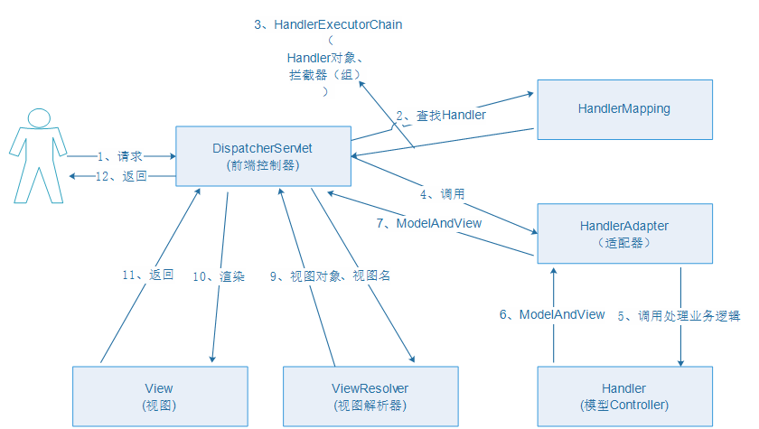

SpringMvc笔记
org.springframework.validation.BindException
结合之前的笔记目前还夹杂一些中文，等有时间结合官方文档重构一份英文的
原初笔记
执行流程

回显
springmvc默认对pojo数据进行回显。pojo数据传入controller方法后，springmvc自动将pojo数据放到request域，key等于pojo类型（首字母小写），页面只需要写参数的属性就可以实现绑定。
弄个异常处理器
实现HandlerExceptionResolver接口，并在spring中注册,然后重写方法
public class AAExceptionResolver implements HandlerException{
@Override
public ModelANdView resolveException(HttpServletRequest request,HttpServletResponse response,Object handler,Exception ex){
String msg="";
if(ex instanceof AAException){
msg = ((AAException)ex).getMessage();
}
else{msg="位置error";}
ModelAndView mv=new ModelAndView();
mv.setViewName("error");
return mv;
}
}
通过注解的方式写异常处理
// 第一种方式: 返回到错误页面,不带异常信息
@ExceptionHandler(value={ArithmeticException.class})
public String dealHandlerExceptionResolver(Exception e){
System.out.println("111111"+e.getMessage());
return "error";
}
// 第二种方式: 将异常信息返回到错误页面, 需要使用 ModelAndView, 不能使用 Map
@ExceptionHandler(value={ArithmeticException.class})
public ModelAndView dealHandlerExceptionResolver(Exception e){
System.out.println("22222"+e.getMessage());
ModelAndView mv = new ModelAndView();
mv.addObject("myexception",e.getMessage());
mv.setViewName("error");
return mv;
}
Basic config
maven dependencies
<dependency>
<groupId>org.springframework</groupId>
<artifactId>spring-test</artifactId>
<version>${spring.version}</version>
</dependency>
<dependency>
<groupId>org.springframework</groupId>
<artifactId>spring-context</artifactId>
<version>${spring.version}</version>
</dependency>
<!-- SpringMVC -->
<dependency>
<groupId>org.ow2.util.bundles</groupId>
<artifactId>commons-logging-1.1.1</artifactId>
<version>1.0.0</version>
</dependency>
<dependency>
<groupId>jstl</groupId>
<artifactId>jstl</artifactId>
<version>1.2</version>
</dependency>
<dependency>
<groupId>org.springframework</groupId>
<artifactId>spring-aop</artifactId>
<version>${spring.version}</version>
</dependency>
<dependency>
<groupId>org.springframework</groupId>
<artifactId>spring-aspects</artifactId>
<version>${spring.version}</version>
</dependency>
<dependency>
<groupId>org.springframework</groupId>
<artifactId>spring-beans</artifactId>
<version>${spring.version}</version>
</dependency>
<dependency>
<groupId>org.springframework</groupId>
<artifactId>spring-core</artifactId>
<version>${spring.version}</version>
</dependency>
<dependency>
<groupId>org.springframework</groupId>
<artifactId>spring-expression</artifactId>
<version>${spring.version}</version>
</dependency>
<dependency>
<groupId>org.springframework</groupId>
<artifactId>spring-web</artifactId>
<version>${spring.version}</version>
</dependency>
<dependency>
<groupId>org.springframework</groupId>
<artifactId>spring-webmvc</artifactId>
<version>${spring.version}</version>
</dependency>
<!-- jsp/servlet serlvet-api -->
<dependency>
<groupId>javax.servlet</groupId>
<artifactId>servlet-api</artifactId>
<version>2.5</version>
<scope>provided</scope>
</dependency>
<dependency>
<groupId>javax.servlet</groupId>
<artifactId>jsp-api</artifactId>
<version>2.0</version>
<scope>provided</scope>
</dependency>
<dependency>
<groupId>javax.servlet</groupId>
<artifactId>jstl</artifactId>
<version>1.2</version>
</dependency>
<!-- 对jason格式的支持-->
<dependency>
<groupId>org.codehaus.jackson</groupId>
<artifactId>jackson-mapper-asl</artifactId>
<version>1.9.13</version>
</dependency>
<dependency>
<groupId>org.codehaus.jackson</groupId>
<artifactId>jackson-core-asl</artifactId>
<version>1.9.13</version>
</dependency>
<dependency>
<groupId>com.fasterxml.jackson.core</groupId>
<artifactId>jackson-databind</artifactId>
<version>2.8.1</version>
</dependency>
<!-- jackson-annotations-2.5.0.jar
jackson-core-2.5.0.jar
jackson-databind-2.5.0.jar-->
web.xml
Below is the web.xml equivalent of the above code based example:
<?xml version="1.0" encoding="UTF-8"?>
<web-app version="2.5"
xmlns="http://java.sun.com/xml/ns/javaee"
xmlns:xsi="http://www.w3.org/2001/XMLSchema-instance"
xsi:schemaLocation="http://java.sun.com/xml/ns/javaee
http://java.sun.com/xml/ns/javaee/web-app_2_5.xsd">
<servlet>
<servlet-name>example</servlet-name>
<servlet-class>org.springframework.web.servlet.DispatcherServlet</servlet-class>
<load-on-startup>1</load-on-startup>
<!-- Again, config locations must consist of one or more comma(逗号)- or space-delimited
and fully-qualified @Configuration classes -->
<init-param>
<param-name>contextConfigLocation</param-name>
<param-value>classpath:spring/mvc-servlet.xml</param-value>
<!-- <param-value>/WEB-INF/mvc-servlet.xml</param-value> -->
</init-param>
</servlet>
<servlet-mapping>
<servlet-name>example</servlet-name>
<url-pattern>/*</url-pattern>
<!-- <url-pattern>*.do</url-pattern>
use *.do or *.action to fit the struts2 -->
</servlet-mapping>
<!-- This filter is used to solve the question that some browsers only support get and post -->
<filter>
<filter-name>HiddenHttpMethodFilter</filter-name>
<filter-class>org.springframework.web.filter.HiddenHttpMethodFilter</filter-class>
</filter>
<filter-mapping>
<filter-name>HiddenHttpMethodFilter</filter-name>
<servlet-name>spring</servlet-name>
</filter-mapping>
</web-app>
<!--The above code is from Spring's official website-->
Sometimes we will need to deploy (配置) a webmvc config file. If you do not define it explicitly (明确地), the default file name should be named as <servlet-name>-servlet.xml under the classpath.
Edit the mvc config file：
To enable autodetection of such annotated controllers, you add component scanning to your configuration. Use the spring-context schema as shown in the following XML snippet:
Spring supports multiple view resolvers. Thus you can chain resolvers and, for example, override specific views in certain circumstances. You chain view resolvers by adding more than one resolver to your application context and, if necessary, by setting the order property to specify ordering. Remember, the higher the order property, the later the view resolver is positioned in the chain.
<?xml version="1.0" encoding="UTF-8"?>
<beans xmlns="http://www.springframework.org/schema/beans"
xmlns:mvc="http://www.springframework.org/schema/mvc"
xmlns:xsi="http://www.w3.org/2001/XMLSchema-instance"
xmlns:context="http://www.springframework.org/schema/context"
xsi:schemaLocation="http://www.springframework.org/schema/beans
http://www.springframework.org/schema/beans/spring-beans.xsd
http://www.springframework.org/schema/mvc
http://www.springframework.org/schema/mvc/spring-mvc.xsd
http://www.springframework.org/schema/context
http://www.springframework.org/schema/context/spring-context.xsd">
<!-- scan the controller -->
<context:component-scan base-package="org.springframework.samples.petclinic.web"/>
<!-- deploy the view resolver -->
<bean id="jspViewResolver" class="org.springframework.web.servlet.view.InternalResourceViewResolver">
<property name="viewClass" value="org.springframework.web.servlet.view.JstlView"/>
<property name="prefix" value="/WEB-INF/jsp/"/>
<property name="suffix" value=".jsp"/>
<!-- 处理静态资源-->
<mvc:resources mapping="/lib/**" location="/lib/" />
<!--<mvc:resources mapping="/css/**" location="/css/" />-->
<!--<mvc:resources mapping="/js/**" location="/js/" />-->
<!-- 配置注解驱动,相当于配置了RequestMappingHandlerMapping和RequesMappingtHandlerAdapter -->
<mvc:annotation-driven />
</bean>
</beans>
为了能够处理中文的post请求，再配置一个encodingFilter，以避免post请求中文出现乱码情况
<filter>
<filter-name>encodingFilter</filter-name>
<filter-class>org.springframework.web.filter.CharacterEncodingFilter</filter-class>
<init-param>
<param-name>encoding</param-name>
<param-value>UTF-8</param-value>
</init-param>
<init-param>
<param-name>forceEncoding</param-name>
<param-value>true</param-value>
</init-param>
</filter>
<filter-mapping>
<filter-name>encodingFilter</filter-name>
<url-pattern>/*</url-pattern>
</filter-mapping>
It actually act as request.setCharcterEncoding("UTF-8"); and response.setCharcterEncoding("UTF-8");
控制器类
先简单写法
public class HelloWorldControler extends AbstractCommandController {
private String showMessagePage;
public HelloWorldControler(){
//绑定处理的jsp页面内容的bean
setCommandClass(HelloWprldBean.class);
}
//提交请求后，controler会自动调用handle方法，负责处理请求并返回合适的模型与视图
@Override
protected ModelAndView handle(javax.servlet.http.HttpServletRequest httpServletRequest, javax.servlet.http.HttpServletResponse httpServletResponse, Object o, BindException e) {
HelloWprldBean helloWprldBean=(HelloWprldBean)o;
//parm：返回的视图名，存储于request中的变量名，存储的变量
return new ModelAndView(getMessagePage(),"helloworldform",helloWprldBean);
}
//返回视图名称
public String getMessagePage(){
return showMessagePage;
}
//设置视图名称，通过spring依赖注入
public void setShowMessagePage(String showMessagePage){
this.showMessagePage=showMessagePage;
}
}
--@Controller注解：采用注解的方式，可以明确地定义该类为处理请求的Controller类； --@RequestMapping()注解：用于定义一个请求映射，value为请求的url； --return "index"：处理完该请求后返回的逻辑视图。 回到mvc-dispatcher.xml，进行相关配置。
@Controller
@RequestMapping(value = "/appointments")
public class AppointmentsController {
private final AppointmentBook appointmentBook;
@Autowired
public AppointmentsController(AppointmentBook appointmentBook) {
this.appointmentBook = appointmentBook;
}
@RequestMapping(method = RequestMethod.GET)
public Map<String, Appointment> get() {
return appointmentBook.getAppointmentsForToday();
}
@RequestMapping(path = "/{day}", method = RequestMethod.GET)
public Map<String, Appointment> getForDay(@PathVariable @DateTimeFormat(iso=ISO.DATE) Date day, Model model) {
return appointmentBook.getAppointmentsForDay(day);
}
@RequestMapping(path = "/new", method = RequestMethod.GET)
public AppointmentForm getNewForm() {
return new AppointmentForm();
}
@RequestMapping(method = RequestMethod.POST)
public String add(@Valid AppointmentForm appointment, BindingResult result) {
if (result.hasErrors()) {
return "appointments/new";
}
appointmentBook.addAppointment(appointment);
return "redirect:/appointments";
//the code will issues(分发) request to appointments
}
}
The first usage is on the type (class) level, which indicates that all handler methods in this controller are relative to the /appointments path. The get() method has a further @RequestMapping refinement: it only accepts GET requests, meaning that an HTTP GET for /appointments invokes this method. The add() has a similar refinement, and the getNewForm() combines the definition of HTTP method and path into one, so that GET requests for appointments/new are handled by that method.
If you set RequestMethod.GET in the @RequestMapping anntation, the server will return error code 405
Contextconfig文件的写法
<?xml version="1.0" encoding="UTF-8"?>
<beans xmlns="http://www.springframework.org/schema/beans"
xmlns:xsi="http://www.w3.org/2001/XMLSchema-instance"
xsi:schemaLocation="http://www.springframework.org/schema/beans http://www.springframework.org/schema/beans/spring-beans.xsd">
//配置controler类
<bean id="hello" class="cn.wwt.Controler.HelloWorldControler">
<property name="showMessagePage">
<value>result</value>
</property>
</bean>
//配置servlet的映射
<bean id="urlMapping" class="org.springframework.web.servlet.handler.SimpleUrlHandlerMapping">
<property name="mappings">
<props>
<prop key="/hello.do">hello</prop>
//key值相当于jsp的action值，value相当于control类的id
</props>
</property>
</bean>
//配置jsp视图解析
<bean id="view" class="org.springframework.web.servlet.view.InternalResourceViewResolver">
<property name="prefix" value="/" />
<property name="suffix" value=".jsp" />
</bean>
</beans>
注解之@RequestBody和@ResponseBody
- @requestBody
如果传输的是单层json对象，我们后台可以直接用 @RequestParam接收.如果传输的是多层嵌套json对象，这个时候会就会出现数据丢失问题,@RequestBody很好的解决了这个问题，它会把前台传输过来的json转化为后台对应的对象
@RequestMapping("/testRequestBody") public String testRequestBody(@RequestParam Map<String, Object> map) { System.out.println(map);// {name=韦德, age=35} return "index"; } @RequestMapping("/testRequestBody") public String testRequestBody(@RequestBody Map<String, Object> map) { System.out.println(map);//{name=韦德, win=[2006, 2012, 2013], age=35} return "index"; }需要注意的是前台需要指定contentType为"application/json"同时要把json对象转化为String，否则后台不能识别
- @responseBody
The @ResponseBody annotation is similar to @RequestBody. This annotation can be placed on a method and indicates that the return type should be written straight to the HTTP response body (and not placed in a Model, or interpreted as a view name). For example
@GetMapping("/something")
@ResponseBody
public String helloWorld() {
return "Hello World";
}
The above example will result in the text Hello World being written to the HTTP response stream.
Introduction to Spring Web MVC framework
Define any controller method signature by using annotations
@RequestParam
Use the @RequestParam annotation to bind request parameters to a method parameter in your controller.
@Controller
@RequestMapping("/pets")
@SessionAttributes("pet")
public class EditPetForm {
@GetMapping
public String setupForm(@RequestParam("petId",defaultValue="1",required=false) int petId, ModelMap model) {
Pet pet = this.clinic.loadPet(petId);
model.addAttribute("pet", pet);
return "petForm";
}
}
Parameters using this annotation are required by default, but you can specify that a parameter is optional by setting @RequestParam's required attribute to false(e.g., @RequestParam(name="id", required=false)).
Type conversion is applied automatically if the target method parameter type is not String. See the section called “Method Parameters And Type Conversion”.
When an @RequestParam annotation is used on a Map<String, String> or MultiValueMap<String, String> argument, the map is populated with all request parameters.
Note:You'd must to write the basic data type as package class instead. Because SpringMVC may try to transfer a null value. A null value can be transfer into a packege class object but could not transfer into a basic data type.
@PathVariable
With the introduction of Spring 3.0, the @Controller mechanism also allows you to create RESTful Web sites and applications, through the @PathVariable annotation and other features.
@Controller
@RequestMapping("/appointments")
public class AppointmentsController {
private final AppointmentBook appointmentBook;
@Autowired
public AppointmentsController(AppointmentBook appointmentBook) {
this.appointmentBook = appointmentBook;
}
@GetMapping
public Map<String, Appointment> get() {
return appointmentBook.getAppointmentsForToday();
}
@GetMapping("/{day}")
public Map<String, Appointment> getForDay(@PathVariable @DateTimeFormat(iso=ISO.DATE) Date day, Model model) {
return appointmentBook.getAppointmentsForDay(day);
}
@GetMapping("/new")
public AppointmentForm getNewForm() {
return new AppointmentForm();
}
@PostMapping
public String add(@Valid AppointmentForm appointment, BindingResult result) {
if (result.hasErrors()) {
return "appointments/new";
}
appointmentBook.addAppointment(appointment);
return "redirect:/appointments";
}
}
Other annotation
@CookieValue:Get the value stored in cookie.
@RequestMapping("testcokie")
public String testCookie(@CookieValue("JSESSIONID") String sessionId){
System.out.println("sessionID : " + sessionId);
return "hello";
}
@RequestHead:get the value stored in the request head
@RequestMapping("test")
public String testCookie(@RequestHeader("User-Agent") String user){
System.out.println("user agent : " + user);
return "hello";
}
RequestMapping's request value and request headers expression:
@RequestMapping(value="test" ,params={"username","age!=10"."!birthday"},hearders={"Accept-Language: en-US,en;q=0.9,zh-CN;q=0.8,zh;q=0.7"})
public String test(String username,Interger age){
return "hello";
}
The method belove only accept those request that without parameter named "birthday",the age value could not be 10, only accept the request from China and USA.
@RequestMapping also support Ant style URL expression.
| wildcards | meaning |
|---|---|
| ? | represent a character in the filename |
| * | represent any characters in the filename |
| ** | represent multiple path(多层路径) |
| URL Path | description |
|---|---|
| /app/*.x | 匹配(Matches)所有在app路径下的.x文件 |
| /app/p?ttern | 匹配(Matches) /app/pattern 和 /app/pXttern,但是不包括/app/pttern |
| /**/example | 匹配(Matches) /app/example, /app/foo/example, 和 /example |
| /app/*/dir/file. | 匹配(Matches) /app/dir/file.jsp, /app/foo/dir/file.html,/app/foo/bar/dir/file.pdf, 和 /app/dir/file.java |
| /*/.jsp | 匹配(Matches)任何的.jsp 文件 |
Return type in MVC method
- String
- return "example": transmit the request to the "example" view.(forword)
- return "redirect:example": redirect the request to URL address "Protocol:IP:Port:ProjectName/example"
public String show(Map<String,Object> map){
User user = new User();
user.setName("wwt");
map.put("user",user);
return "showuser";
}
public String show(Model model){
User user = new User();
user.setName("wwt");
model.addAttribute("user",user);
return "showuser";
}
- ModelAndView
return model and view.
ModelAndView n = new ModelAndView();
n.setViewName("successs");
n.addObject("user",user);
return n;
- Object
Return an object, ordinary use it to return Json data. Add a @Responsebody annotation before method ot return value.
- void
Normaly used to return other MIME type data.
Such as return html :Response.getWriter().write();
@SessionAttribute is use to transmit the data in the session scope,such as SessionAttribute(value = {"user"}, type= {String.class}), when you put user object and the String type data into the map, or ModelAndView, will add it into session scope too.
Some java native api
Such as HttpServletRequest, HttpServletResponse, HttpSession, Reader, Writer, InputStream, OutputStream, java.security.Principal.
Design a restftul application
### When your browser only support "get" and "post"
Since browsers currently only support GET and POST(JSPs only permit GET POST or HEAD), a common technique - used by the Prototype library, for instance - is to use a normal POST with an additional hidden form field (_method) to pass the "real" HTTP method along. This filter reads that parameter and changes the HttpServletRequestWrapper.getMethod() return value accordingly. Only "PUT", "DELETE" and "PATCH" HTTP methods are allowed.
The name of the request parameter defaults to _method, but can be adapted via the methodParam property.
The code below will show you how to alter the jsp code
<form id = 'deletefrom' method = 'post' >
<input type = 'hidden' name = '_method' value = 'delete' />
...
</form>
<a href = 'javascript:void(0)' onclick = 'deleteById(id)'>删除</a>
<script>
function deleteById(id){
var form = Document.getElementById('deleteform');
form.action = "${pageContext.request.contextPath}"+id;
form.submit();
}
</script>
Design
URL design example:
- /orders HTTP GET : get list page
- /order/1 HTTP GET : get order that id = 1
- /order/1 HTTP DELETE: delete order that id = 1
- /order/1 HTTP PUT : update order that id = 1
- /order HTTP POST : add an order
- /order HTTP GET : return a page to add order
Custom converter
Just write a class inherit(继承) from Converter and register it in MVC config file.
public class DateConverter implements Converter<String,Date> {
@Override
public Date convert(String source){
//转换日期类型
try{
SimpleDateFormat simpleDateFormat = new SimpleDateFormat();
simpleDateFormat.setLenient(false);
return simpleDateFormat.parse(source);
}catch (ParseException e){
e.printStackTrace();
}
return null;
}
}
<!-- 日期转换-->
<bean id ="myConverter" class="org.springframework.format.support.FormattingConversionServiceFactoryBean">
<property name="converters">
<set>
<bean class="com.web.DateConverter" />
</set>
</property>
</bean>
Handle exception
A programmatic way of handling exceptions gives you more options for responding appropriately(适当地) before the request is forwarded to another URL.
- Handle a single exception. The
@ExceptionHandlerannotation can be used on methods that should be invoked to handle an exception. Such methods may be defined locally within an@Controlleror may apply to many@Controllerclasses when defined within an@ControllerAdviceclass. The following sections explain this in more detail. Remember that a Map could not carry a Exception object.
@ExceptionHandler
public ModelAndView handleException(Exception e){
ModelAndView modelAndView = new ModelAndView();
modelAndView.addObject("exception",e);
modelAndView.setViewName("error");
return modelAndView;
}
- Add a specify exception class in to the annotation to deal with different exception, such as
@ExceptionHandler(NumberFormatException.class)
- Match with a custom(定制) exception
java
public class LackParamException extends SecurityException {
public LackParamException(){
super("Lack parameter");
}
public LackParamException(String msg){
super(msg);
}
}
@ExceptionHandler(LackParamException.class)
public ModelAndView handleException(Exception e){
ModelAndView modelAndView = new ModelAndView();
modelAndView.addObject("Exception",e);
modelAndView.setViewName("error");
return modelAndView;
}
@RequestMapping(path = "test-exception")
public String testException(String str) throws LackParamException{
if(StringUtils.isBlank(str)){
throw new LackParamException("缺少参数");
}
return "success";
}
- Handle global exception
Advising controllers with @ControllerAdvice and @RestControllerAdvice. The `@ControllerAdvice` annotation is a component annotation allowing implementation classes to be auto-detected through classpath scanning.
It is automatically enabled when using the MVC namespace or the MVC Java config. Classes annotated with @ControllerAdvice can contain @ExceptionHandler, @InitBinder, and @ModelAttribute annotated methods, and these methods will apply to @RequestMapping methods across all controller hierarchies(层次结构).
@RestControllerAdviceis an alternative where@ExceptionHandlermethods assume@ResponseBody` semantics by default.
java
@ControllerAdvice
public class MyExceptionHandler {
@ExceptionHandler(LackParamException.class)
public ModelAndView handleException(Exception e){
ModelAndView modelAndView = new ModelAndView();
System.out.println("catch exception");
modelAndView.addObject("Exception",e);
modelAndView.setViewName("error");
return modelAndView;
}
// handle other type exception
}
Intercepting requests with a HandlerInterceptor
Interceptors located in(位于) the handler mapping must implement HandlerInterceptor from the org.springframework.web.servlet package. This interface defines three methods: preHandle(..) is called before the actual handler is executed; postHandle(..) is called after the handler is executed; and afterCompletion(..) is called after the complete request has finished. These three methods should provide enough flexibility to do all kinds of preprocessing and postprocessing.
The preHandle(..) method returns a boolean value. You can use this method to break or continue the processing of the execution chain.
java
public class MyInterceptor implements HandlerInterceptor {
/**
* 该方法将在请求处理之前进行调用,在handler前执行，
* 可用于身份认证，权限校验
*/
@Override
public boolean preHandle(HttpServletRequest httpServletRequest, HttpServletResponse httpServletResponse, Object o) {
System.out.println("prehandle");
return true;
}
/**
* 它会在DispatcherServlet 进行视图返回渲染之前被调用，所以我们可以在这个方法中对Controller 处理之
* 后的ModelAndView 对象进行操作。
* 如果想要想页面提供公共数据或公共配置信息，可以考虑使用这里的ModelAndView对象
*/
@Override
public void postHandle(HttpServletRequest httpServletRequest, HttpServletResponse httpServletResponse, Object o, ModelAndView modelAndView) {
System.out.println("posthandle");
}
/**
* 该方法将在整个请求结束之后，也就是在DispatcherServlet 渲染了对应的视图之后执行
* 执行handler后执行，可用于日志，系统性能分析,清理资源
*/
@Override
public void afterCompletion(HttpServletRequest httpServletRequest, HttpServletResponse httpServletResponse, Object o, Exception e) {
System.out.println("afterCompletion");
}
}
xml
<!-- 配置拦截器，多个拦截器顺序执行-->
<mvc:interceptors>
<mvc:interceptor>
<mvc:mapping path="/**"/>
<mvc:exclude-mapping path="/js/**" />
<bean class="com.Intercepter.MyIntercepter" />
</mvc:interceptor>
</mvc:interceptors>
When you deploy multiple interceptor, their excute's order may look like this:
pre1->pre2->post2->post1->after2->after1
Spring’s multipart (file upload) support
When the Spring DispatcherServlet detects a multi-part request, it activates the resolver that has been declared in your context and hands over the request. The resolver then wraps the current HttpServletRequest into a MultipartHttpServletRequest that supports multipart file uploads. Using the MultipartHttpServletRequest, you can get information about the multiparts contained by this request and actually get access to the multipart files themselves in your controllers.
Of course you also need to put the appropriate jars in your classpath for the multipart resolver to work. In the case of the CommonsMultipartResolver, you need to use commons-fileupload.jar.
- Using a MultipartResolver with Commons FileUpload. Of course you also need to put the appropriate jars in your classpath
commons-fileupload.jar.
xml
<!--配置MultiPartResolver，处理文件上传-->
<bean id="multipartResolver" class="org.springframework.web.multipart.commons.CommonsMultipartResolver">
<property name="defaultEncoding" value="utf-8" /> <!--默认编码ISO-8859-1 -->
<property name="maxInMemorySize" value="10240" /> <!--最大内存大小 -->
<property name="uploadTempDir" value="/upload" /> <!-- 上传后的目录名-->
<property name="maxUploadSize" value="-1" /> <!-- 最大文件大小，单位字节，-1为无限制 -->
</bean>
- Handling a file upload in a form, First, create a form with a file input that will allow the user to upload a form. The encoding attribute (
enctype="multipart/form-data") lets the browser know how to encode the form as multipart request:
<form method="post" action="/form" enctype="multipart/form-data">
<input type="text" name="name"/>
<input type="file" name="file"/>
<input type="submit"/>
</form>
- Create a controller that handles the file upload.
@RequestMapping(path = "fileupload")
public String handleFormUpload(@RequestParam("name") String name,
@RequestParam("file") MultipartFile file, Model model) throws Exception{
if(!file.isEmpty() && file.getOriginalFilename() != null && file.getOriginalFilename().length() > 0){
//文件存储路径
String uploadPath = "E:\\Upload\\";
//文件名
String orignName = file.getOriginalFilename();
//文件拓展名
String extendName = orignName.substring(orignName.lastIndexOf("."));
//为防止文件重名使用UUID的randomUUID
String newFileName = UUID.randomUUID().toString() + extendName;
File uploadfile = new File(uploadPath + newFileName);
//使用transferTo（dest）方法将上传文件写到服务器上指定的文件
file.transferTo(uploadfile);
//下面的photopath是自己在tomcat设置的虚拟路径,对应E:\\Upload\\，filePath可以给前端 调用
model.addAttribute("filePath","/photopath/" + newFileName);
}
return "success";
}
- This step you can skip. In practice(实践中) you can save file in a database, store it on the file system, and so on. For save it into file system we can set a virtual path in tomcat. Edit the
server.xmlinconfdirectory in Tomcat.
<Host name="localhost" appBase="webapps"
unpackWARs="true" autoDeploy="true">
...
<!-- 虚拟路径[访问时路径为/photo] -->
<Context path="/photo" docBase="D:\temp" reloadable="true" />
Then hook up(勾上) the Deploy applications configured in Tomcat instance in your IEDA.
jason and jasonp
Question about location(To be alter)
The "/" location in jsp and MVC are different meaning.
The "/" location under the MVC means...
If your application fully seprates(分离) front-end and after-end, one solution is write a location variable in js. And use it in html. Another solution is set a visit path in your database, the after-end can fetch this value to front-end. Front-end can via AJAX or JS to add get and add in to url.
While you can use ${pageContext.request.contextPath} in jsp file.
CRM Example Website
销售易
demo.edusoho.com
www.wuyezhijia.cn 诺怀
open.taobao.com
www.inxedu.com/exam
www.inxedu.com
德课
Restful API
REST:Representaional State Transfer, (资源)表现层状态转换。是目前最流行的互联网软件架构。
-
URL design
-
GET：读取（Read）
- POST：新建（Create）
- PUT：更新（Update）
- PATCH：更新（Update），通常是部分更新
-
DELETE：删除（Delete）
-
有些客户端只能使用
GET和POST这两种方法。服务器必须接受POST模拟其他三个方法（PUT、PATCH、DELETE）。
这时，客户端发出的 HTTP 请求，要加上X-HTTP-Method-Override属性，告诉服务器应该使用哪一个动词，覆盖POST方法。
http POST /api/Person/4 HTTP/1.1 X-HTTP-Method-Override: PUT
上面代码中，X-HTTP-Method-Override指定本次请求的方法是PUT，而不是POST。
-
URL should be plural(复数的) noun(名词), but not verb(动词).
-
避免多级url，更好的做法是，除了第一级，其他级别都用查询字符串表达。
GET /authors/12?categories=2
GET /articles?published=true
- 状态码
客户端的每一次请求，服务器都必须给出回应。回应包括 HTTP 状态码和数据两部分。
HTTP 状态码就是一个三位数，分成五个类别
1xx：相关信息2xx：操作成功3xx：重定向4xx：客户端错误5xx：服务器错误
API 不需要1xx状态码，下面介绍其他四类状态码的精确含义。
200状态码表示操作成功，但是不同的方法可以返回更精确的状态码。
- GET: 200 OK
- POST: 201 Created
- PUT: 200 OK
- PATCH: 200 OK
- DELETE: 204 No Content
上面代码中，POST返回201状态码，表示生成了新的资源；DELETE返回204状态码，表示资源已经不存在。
此外，202 Accepted状态码表示服务器已经收到请求，但还未进行处理，会在未来再处理，通常用于异步操作。
API 用不到301状态码（永久重定向）和302状态码（暂时重定向，307也是这个含义），因为它们可以由应用级别返回，浏览器会直接跳转，API 级别可以不考虑这两种情况。
API 用到的3xx状态码，主要是303 See Other，表示参考另一个 URL。它与302和307的含义一样，也是"暂时重定向"，区别在于302和307用于GET请求，而303用于POST、PUT和DELETE请求。收到303以后，浏览器不会自动跳转，而会让用户自己决定下一步怎么办。
4xx状态码表示客户端错误，主要有下面几种。
400 Bad Request：服务器不理解客户端的请求，未做任何处理。
401 Unauthorized：用户未提供身份验证凭据，或者没有通过身份验证。
403 Forbidden：用户通过了身份验证，但是不具有访问资源所需的权限。
404 Not Found：所请求的资源不存在，或不可用。
405 Method Not Allowed：用户已经通过身份验证，但是所用的 HTTP 方法不在他的权限之内。
410 Gone：所请求的资源已从这个地址转移，不再可用。
415 Unsupported Media Type：客户端要求的返回格式不支持。比如，API 只能返回 JSON 格式，但是客户端要求返回 XML 格式。
422 Unprocessable Entity ：客户端上传的附件无法处理，导致请求失败。
429 Too Many Requests：客户端的请求次数超过限额
5xx状态码表示服务端错误。一般来说，API 不会向用户透露服务器的详细信息，所以只要两个状态码就够了。
500 Internal Server Error：客户端请求有效，服务器处理时发生了意外。
503 Service Unavailable：服务器无法处理请求，一般用于网站维护状态。
- 不要返回纯本文
API 返回的数据格式，不应该是纯文本，而应该是一个 JSON 对象，因为这样才能返回标准的结构化数据。所以，服务器回应的 HTTP 头的Content-Type属性要设为application/json。
客户端请求时，也要明确告诉服务器，可以接受 JSON 格式，即请求的 HTTP 头的ACCEPT属性也要设成application/json
-
发生错误时，不要返回 200 状态码,有一种不恰当的做法是，即使发生错误，也返回200状态码，把错误信息放在数据体里面.解析数据体以后，才能得知操作失败。这张做法实际上取消了状态码，这是完全不可取的。正确的做法是，状态码反映发生的错误，具体的错误信息放在数据体里面返回
-
提供链接.API 的使用者未必知道，URL 是怎么设计的。一个解决方法就是，在回应中，给出相关链接，便于下一步操作。这样的话，用户只要记住一个 URL，就可以发现其他的 URL。这种方法叫做 HATEOAS。
举例来说，GitHub 的 API 都在 api.github.com 这个域名。访问它，就可以得到其他 URL。
refers to:RESTful API 最佳实践
Some Question you may meet
messy code when use GET method
- Google how to set the Sever.xml in Tomcat, Or use Tomcat 8 or a higher version.
- use
String a = "mseeycode".getBytes("Utf-8");orString a = new String("mseeycode","UTF-8"); String a = URLEncoder.encoder("messycode","UTF-8");
jsp page could not use EL
The one possibly reason is that your jsp version is lowwer than 2.0. Here is some solution
-
Add
<%@page isELIgnored=”false” %>to your jsp file -
Alter the jsp version in web.xml as following
xml
<web-app version="2.5"
xmlns="http://java.sun.com/xml/ns/javaee"
xmlns:xsi="http://www.w3.org/2001/XMLSchema-instance"
xsi:schemaLocation="http://java.sun.com/xml/ns/javaee
http://java.sun.com/xml/ns/javaee/web-app_2_5.xsd" >
refers to 隔壁老王666